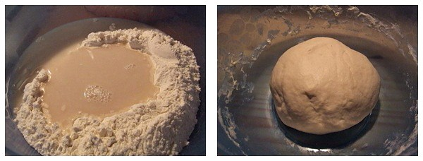
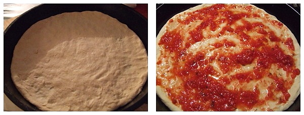
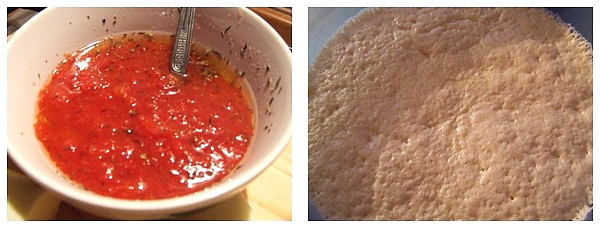

Dintre toate tipurile de pizza, Pizza Margherita este cea mai cunoscuta si indragita pizza italiana.
Se spune ca la Napoli, cu ocazia vizitei regelui Umberto I si a reginei Margherita, Raffaele Esposito,
cel mai renumit maestru pizzaiolo, a oferit inaltilor sai oaspeti 3 tipuri de pizza printre care se afla si cea
creata special pentru regina si care era compusa din: rosii, mozzarella si busuioc si care reprezenta, prin ingredientele
sale, culorile steagului italian.Regina a fost atat de incantata incat a dorit sa-l felicite personal pe maestru care la
randu-i, pentru a imortaliza acel moment, a botezat opera sa culinara Pizza Margherita.
Ingrediente pentru aluat
500 g faina
250-270 ml apa plata usor calduta
20 g drojdie proaspata/6 g drojdie uscata
1/4 lingurita mica miere
10 g sare fina
5 linguri ulei de masline
Ingrediente pentru sos
150 ml sos de rosii
4 linguri ulei masline
1 lingurita rasa zahar
1/2 lingurita mica oregano
300 g mozzarella de bivolita/vaca
busuioc proaspat
Mod de preparare
Punem faina intr-un vas si facem la mijloc o gropita. Frecam drojdia cu mierea si o amestecam apoi cu toata
cantitatea de apa. Adaugam drojdia in centrul fainii.
Le amestecam un pic cat sa se combine, apoi adaugam uleiul si sarea. Framantam pana rezulta un aluat moale,
elastic care nu se lipeste de maini (daca aluatul este prea tare, mai adaugam 1-2 linguri de apa calduta si
framantam pana cand devine perfect elastic). Punem aluatul pentru pizza la dospit, intr-un loc caldut, ferit
de curenti reci de aer, pana cand isi dubleaza volumul (1-2 ore).

Amestecam sosul de rosii cu uleiul, zaharul si putin oregano. Scurgem mozzarella si apoi o taiem felii sau o sfaramam cu mana.
Impartim aluatul in doua bucati egale. Intindem cu mana fiecare bucata de aluat, intr-o foaie de cca 3 mm grosime. NU folosim facaletul pentru intins.

Asezam aluatul de pizza in doua forme antiaderente si le acoperim cu un servet de bumbac usor umed.
Preincalzim cuptorul la 220°C. Cand cuptorul s-a incins, ungem ambele pizze cu sosul de rosii si adaugam mozzarella.

Coacem pizza italiana Margherita in cuptorul preincalzit la 220°C, pe
al doilea etaj de sus in jos, pentru cca 10-15 minute. Cand o scoatem din cuptor,
inainte de a o servi, adaugam busuiocul rupt in bucatele mici.